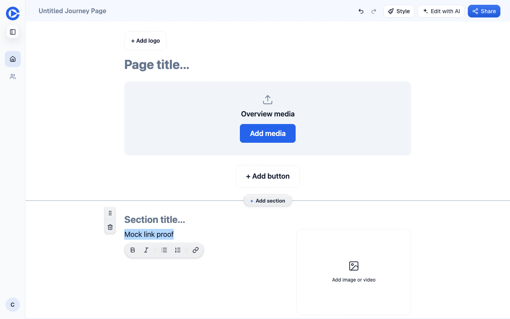
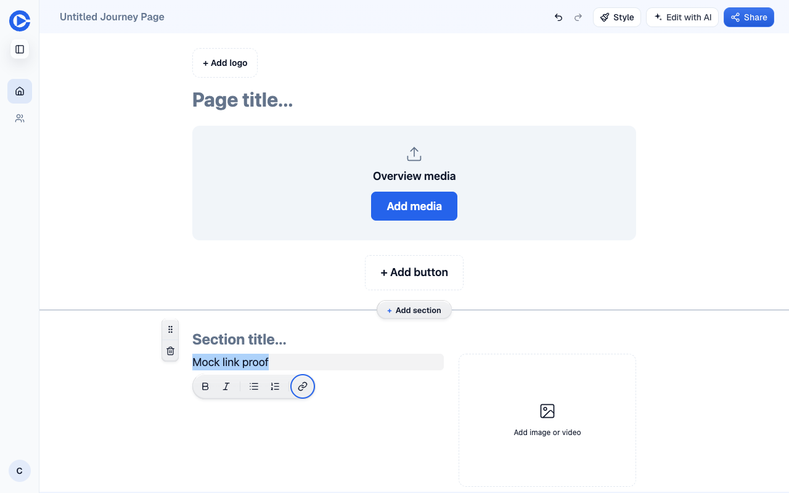
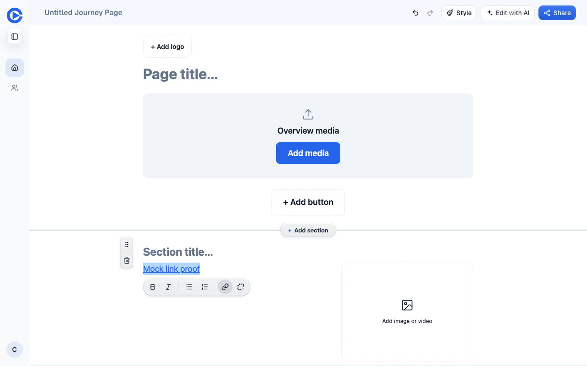

Verified head 70b8f2b01237cac6bab17d4e2b6fbfc93c80092a. Pull request · Preview
Repro: select “Mock link proof” in a story body, press Alt+F10, then End. Press Enter on Add link, type https://example.com/proof-1588, and press Enter.
Both views run the deployed application bundles with a mock identity and browser-memory page storage. All application API requests and writes were intercepted. No production or staging data was changed. Preview login and doctor passed separately against the real preview. The initial text selection used the browser Selection API; toolbar navigation and link entry used keyboard input.
Staging SHA 7be5e683ec884c799da9567c374cb12e98636f60. Alt+F10 leaves focus in the textbox. The toolbar has no focused button.

Alt+F10 focuses Bold. End moves focus to Add link, shown with the blue focus ring.

The text contains the link, and focus and the original selection return to the textbox. The editor reached data-save-state="saved". A separate pages_get mock read returned the same anchor HTML at revision 2. This proves editor serialization and the mocked save/read path, not real database persistence.

Command: pnpm --filter clarity-journey-editor test tests/rich-text-link-entry.test.ts. The head test file was copied onto the merge base without implementation changes.
Merge base 7bf0634b36e9aa50dc226a10d47b062b4383f27d Test Files 1 failed (1) Tests 4 failed | 1 passed (5) Both canvas=true and canvas=false keyboard cases fail at the expected Bold focus assertion. Head 70b8f2b01237cac6bab17d4e2b6fbfc93c80092a Test Files 1 passed (1) Tests 5 passed (5)
The suite also checks editing and removing links, caret restoration, Escape, and preservation of mouse selection. No product defect was found. Early mock response schema and revision errors were corrected before the final evidence run. Waved through: none.